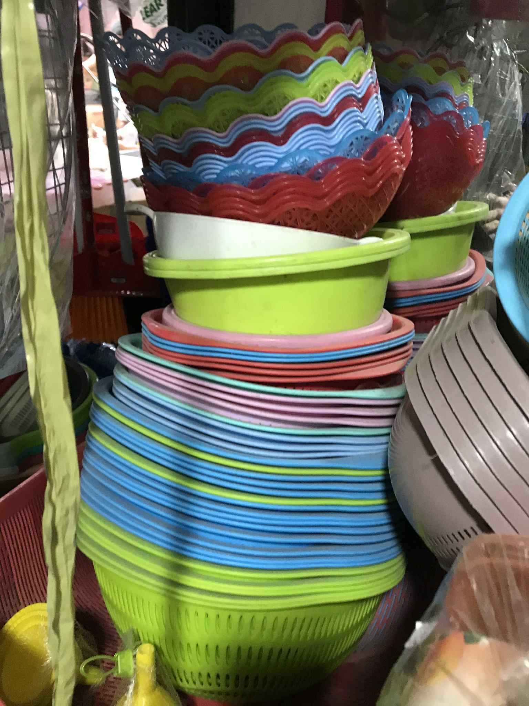
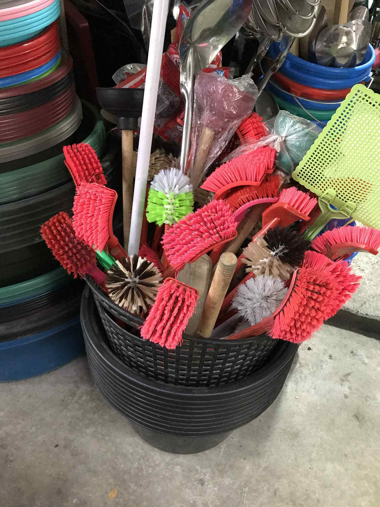
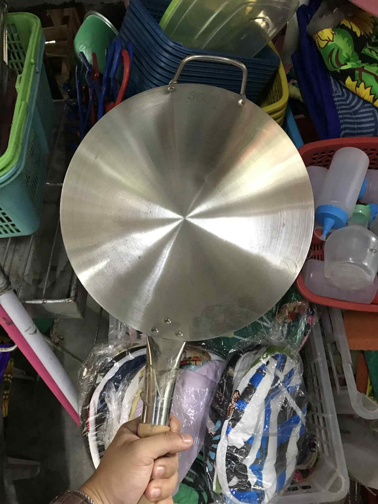
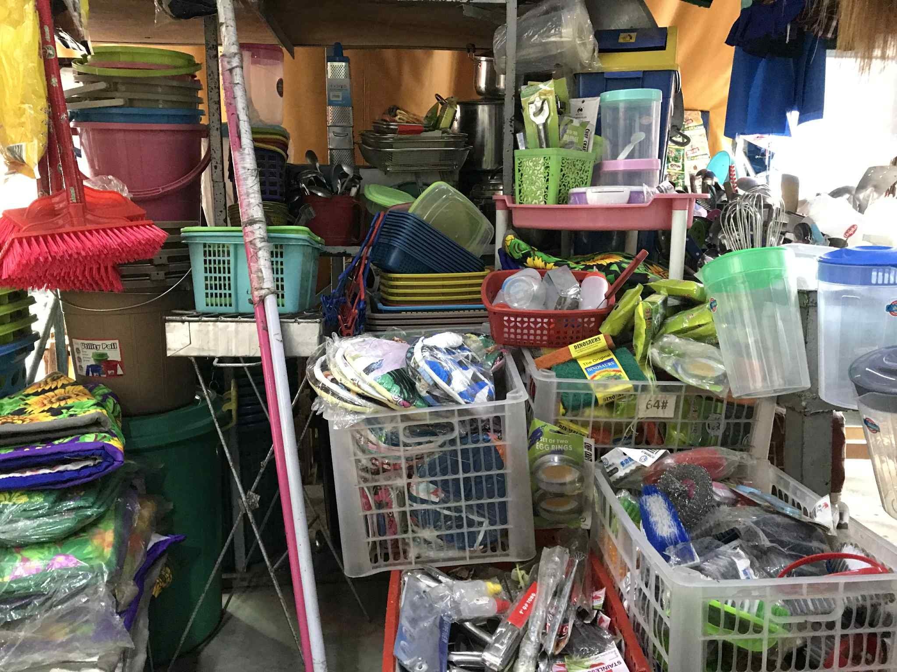
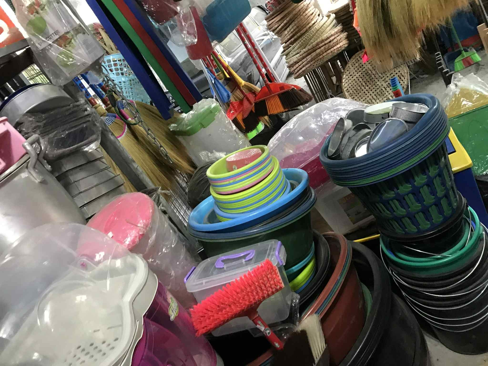
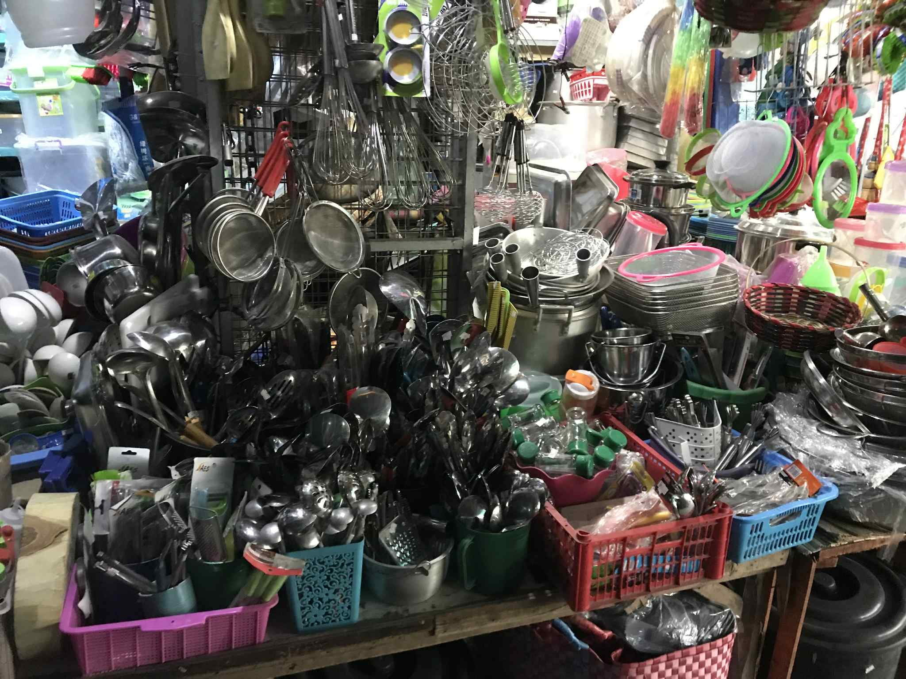
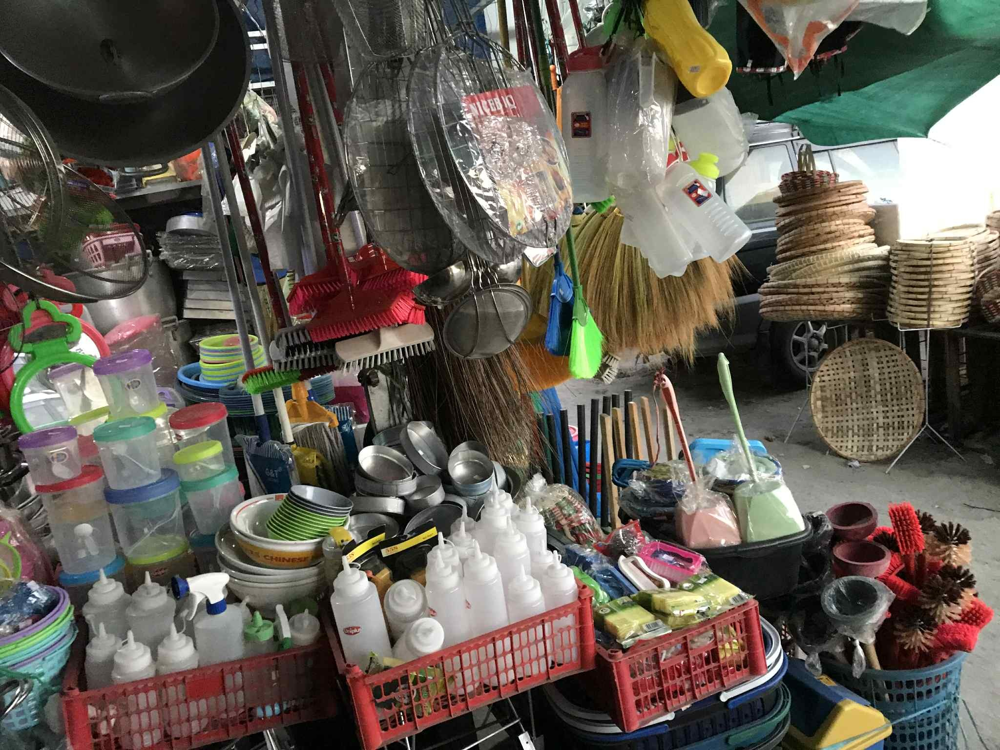

💡 Mini Infographics:
5 Smart Ways to Use Your Basin Every Day!
🧺
Laundry
Carry and soak up to 20kg of clothes.
🥬
Vegetables
Wash and sort fresh produce with ease.
🐶
Pet Care
Perfect size for bathing small pets.
🍚
Storage
Safely store rice, grains, or dry goods.
🎉
Events
Reusable for parties, games, or gatherings.
Rainbow of Everyday Essentials
Meet our premium collection of colorful timba - the versatile workhorses of Filipino households. These beautifully stacked basins showcase a vibrant spectrum from deep emerald greens and rich burgundies to bright coral pinks and ocean blues. Each timba represents decades of trusted craftsmanship and practical design.
Whether you're doing laundry, bathing the kids, storing water, or tackling household chores, our diverse color palette ensures there's a perfect shade for every family's needs. Built tough enough for daily use yet stylish enough to brighten any space, these timba prove that practical doesn't have to mean plain.
From washing to storage, from utility to style - discover why Filipino families have trusted our timba for generations.

The Cleaning Arsenal That Never Quits
Meet our premium collection of colorful timba - the versatile workhorses of Filipino households. These beautifully stacked basins showcase a vibrant spectrum from deep emerald greens and rich burgundies to bright coral pinks and ocean blues. Each timba represents decades of trusted craftsmanship and practical design.
Whether you're doing laundry, bathing the kids, storing water, or tackling household chores, our diverse color palette ensures there's a perfect shade for every family's needs. Built tough enough for daily use yet stylish enough to brighten any space, these timba prove that practical doesn't have to mean plain.
From washing to storage, from utility to style - discover why Filipino families have trusted our timba for generations.

The Heart of Every Filipino Kitchen
From sizzling adobo and crispy lumpia to perfectly tossed pancit and golden fried rice, this wok handles every Filipino favorite with ease. Its spacious cooking surface accommodates family-sized portions while the ergonomic handles ensure safe, comfortable cooking. Whether you're a seasoned chef or just starting your culinary journey, this wok delivers consistent results that bring families together around the dinner table.
From quick weeknight dinners to festive celebrations - discover why generations of Filipino cooks have trusted the timeless versatility of a quality wok.

WHY CHOOSE US?
High Quality
Products are made from superior, high-quality materials to ensure the best user experience.
Durable
Our products are carefully tested for durability, ensuring they withstand daily use.
Supports Local Business
We source items from local businesses in the Philippines to promote homegrown products.
Featured Moments (Images and Videos)



